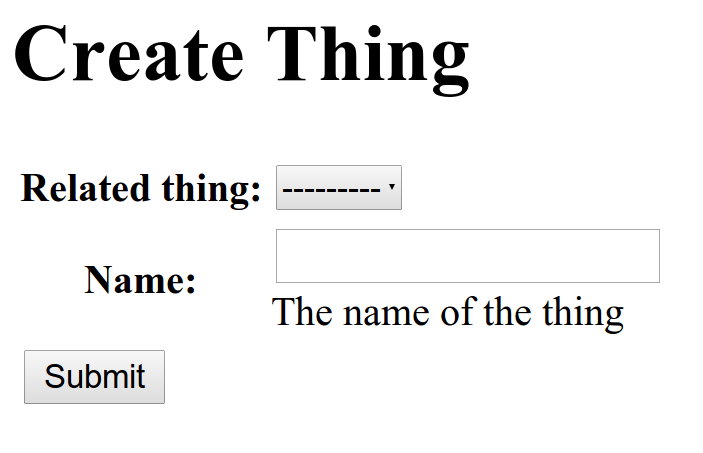
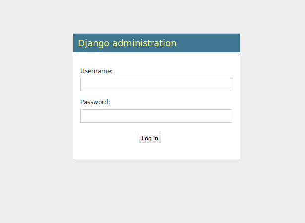
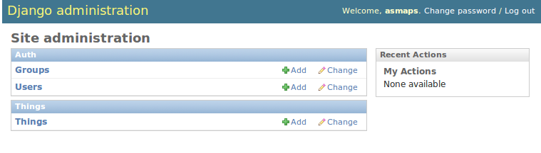
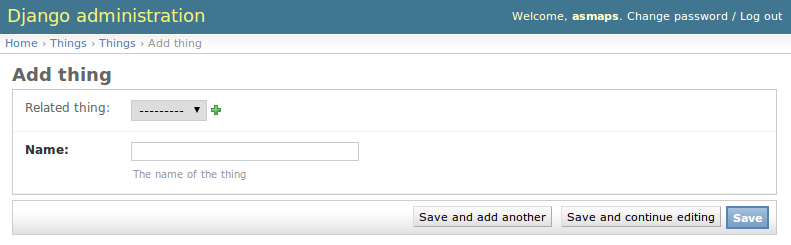
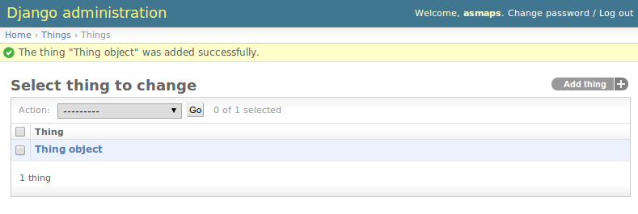

Einführung in Django
Was ist Django und wofür braucht man das?
made by Arne Schauf @asmaps
26.10.2014 - NetHack 2014
Attention please!
Vortrag unter:
http://asmaps.github.io/django-presentation/
Übersicht
- Was ist Django?
- Komponenten
- Datenbank
- Tools
- Praxiseinsatz
- Alternativen
- Where to start?
Was ist Django?
Django Reinhardt
.jpg)
* 23.1.1910✝ 16.5.1953
The Web framework for perfectionists with deadlines. Django makes it easier to build better Web apps more quickly and with less code.
- High-level Webdevelopment Framework
- Python
- DRY
- BSD Lizenz
- Version 1.6.2
MVT
Model, View, Template(, Controller)
Der Weg eines Requests
urls.py
urls.py
from django.conf.urls import patterns, include, url
from django.contrib import admin
admin.autodiscover()
urlpatterns = patterns(
'',
url(r'^allauth/', include('allauth.urls')),
url(r'^accounts/', include('accounts.urls')),
url(r'^admin/', include(admin.site.urls)),
url(r'^', include('main.urls')),
)
main/urls.py
from django.conf.urls import patterns, url
from django.views.generic import TemplateView
from main.views import (
HomeView, HelpView, AboutView, ...)
...
urlpatterns = patterns(
'',
url(r'^$', HomeView.as_view(), name="home"),
url(r'^about/$', AboutView.as_view(), name="about"),
url(r'^legal/$',
TemplateView.as_view(template_name='main/legal.html'),
name="legal"),
url(r'^help/$', HelpView.as_view(), name="help"),
...
)
Views
Function based views (FBV)
# urls.py
url(r'^evaluate/(?P<id>\d+)/$', 'main.views.evaluate'),
# views.py
@login_required
def evaluate(request, id):
return render_to_response(
'evaluate/evaluate.html',
{
'questionnaire' : Questionnaire.objects.get(id=id),
'active' : 'evaluate',
},
context_instance=RequestContext(request)
)
Class based views (CBV)
- komfortabler als FBV
- Standard-Funktionalität wiederverwendbar
- Vererbung
- Generic Views
- Tip: ccbv.co.uk
Beispiel TemplateView
# urls.py
url(r'^about/$', AboutView.as_view(), name="about"),
# views.py
from django.views.generic import TemplateView
class AboutView(TemplateView):
template_name = "main/about.html"
Beispiel DetailView
# urls.py
url(r'^(?P<slug>[a-zA-Z0-9_\-]+)/$',
HostDetailView.as_view(), name="info"),
# views.py
from django.views.generic import DetailView
class HostDetailView(DetailView):
model = Host
template_name = 'host/detail.html'
ORM & Models
ORM & Models
- Python to DB Mapping
- Model = Tabelle
- Datenvalidierung
- Anlegen/Ändern/Löschen von Datensätzen
- Kein "Raw-SQL"
- Vererbung
Model Beispiel
# models.py
from django.db import models
class Host(models.Model):
subdomain = models.CharField(max_length=256, validators=[
RegexValidator(
regex=r'^(([a-z0-9][a-z0-9\-]*[a-z0-9])|[a-z0-9])$',
message='Invalid subdomain: only a-z, 0-9 and - are allowed'
),
domain_blacklist_validator])
domain = models.ForeignKey(Domain)
update_secret = models.CharField(max_length=256)
comment = models.CharField(
max_length=256, default='', blank=True, null=True)
Model Vererbung Beispiel
# models.py
from django.db import models
class BaseModel(models.Model):
last_update = models.DateTimeField(auto_now=True)
created = models.DateTimeField(auto_now_add=True)
class Meta:
abstract = True
class Comment(BaseModel):
comment = models.TextField()
class Value(BaseModel):
value = models.IntegerField()
Forms & Validierung
Forms & Validierung
- Automatische Generierung von HTML <form>
- "POST-Data to Python"
- Datenvalidierung
- Sicherheitsmechanismen
Form Beispiel
# forms.py
from django import forms
class BeginEndForm(forms.Form):
begin = forms.DateField()
end = forms.DateField()
# views.py
from django.views.generic import FormView
class CalcDayDifferenceView(FormView):
form_class = BeginEndForm
def form_valid(self, form):
diff = form.cleaned_data['end'] - form.cleaned_data['begin']
# do sth with the difference
...
Form Beispiel Template
{# calc_day_difference.html #}
...
....
ModelForms
ModelForms
- Forms aus Models generieren
- Eingegebene Daten wieder in die DB speichern
- Neue Datensätze erstellen
Model Form Beispiel
# models.py
from django.db import models
class Thing(models.Model):
related_thing = models.ForeignKey('Thing', null=True, blank=True)
name = models.CharField(max_length=255,
help_text='The name of the thing')
# views.py
from django.views.generic import CreateView
from .models import Thing
class CreateThingView(CreateView):
model = Thing
Model Form Template
# thing_form.html
Create Thing
Das Ergebnis

Admin Interface
Admin Interface
- Generiertes Web-Datenbank-Frontend
- Anlegen, bearbeiten und löschen
- Praktisch kein zusätzlicher Code
Admin Interface - Code
# admin.py
from django.contrib import admin
from things.models import Thing
admin.site.register(Thing)
Admin Interface - Login

Admin Interface - Übersicht

Admin Interface - Add Thing

Admin Interface - Things

SyncDB & Migrations
SyncDB
- Automatisiertes anlegen der DB
- kein Code oder SQL
- Nur neue Tabellen anlegen
asmaps@kallisto ...o-presentation/example_project % python manage.py syncdb Creating tables ... Creating table django_admin_log Creating table auth_permission Creating table auth_group_permissions Creating table auth_group Creating table auth_user_groups Creating table auth_user_user_permissions Creating table auth_user Creating table django_content_type Creating table django_session Creating table things_thing You just installed Django's auth system, which means you don't have any superusers defined. Would you like to create one now? (yes/no): yes Username (leave blank to use 'asmaps'): Email address: Password: Password (again): Superuser created successfully. Installing custom SQL ... Installing indexes ... Installed 0 object(s) from 0 fixture(s)
Migrations
- Änderungen an Models in DB einspielen
- Bisher nur über Third-Party-App "south"
- Ab 1.7 in Django
Hilfreiche Apps
Hilfreiche Apps
- South
- django-extensions
- Django CMS
- django-debug-toolbar
- django-braces
- gunicorn
- django-celery
- huey
- djangorestframework
- uvm....
Deployment
Deployment
Webserver:
- Apache (mod_wsgi)
- Nginx (Gunicorn + Unix-Socket)
- Alle Webserver mit WSGI-Support oder FastCGI
Datenbanken:
- Postgres
- MySQL
- SQLite
- Oracle
- Weitere über Third-Party DB-Konnektoren
Django in freier Wildbahn
Alternativen
Alternativen
Me imagining what microframeworks are like
Gefunden auf soyeahdjango.com
Flask
- Lightweight Alternative
- weniger Funktionen out-of-the-box
- kleine Projekte
Django lernen?
EINFACH MAL AUSPROBIEREN!
Offizielle Docs:
https://docs.djangoproject.com
Online-Tutorials:
http://twoscoopspress.com/pages/django-tutorials
Buch:
Two Scoops of Django
Diese Präsentation:
http://asmaps.github.io/django-presentation/
Danksagung
Reveal.js:
https://github.com/hakimel/reveal.js
Markus Zapke-Gründemann:
http://www.django-introduction.com/
Raphaël.js:
http://raphaeljs.com/
Bildquellen
- Django und das Django Logo sind eingetragene Warenzeichen der Django Software Foundation
- Django Reinhardt Porträt: Wikimedia Commons/William P. Gottlieb (gemeinfrei)
Lizenz
Dieses Werk steht unter einer
Creative Commons
Namensnennung - Weitergabe unter gleichen Bedingungen 3.0 Unported Lizenz